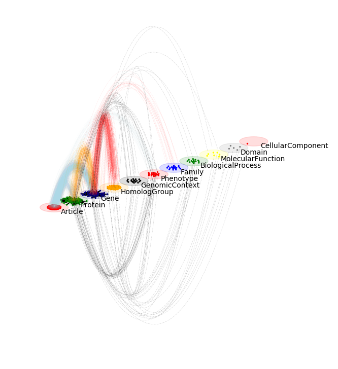

Basic tutorial:
Core idea and principles
py3plex - key principles
Analysis of multilayers
Analysis of multiplex networks
Supra adjacency matrices
Network visualization
Community detection (multiplex)
Supra adjacency matrices
Random networks
Further steps: learning:
Learning - label propagation
Learning - Node embeddings
API documentation:
py3plex
py3plex
py3plex.visualization.fa2 package
View page source
py3plex.visualization.fa2 package
Submodules
py3plex.visualization.fa2.fa2util module
py3plex.visualization.fa2.forceatlas2 module
Module contents